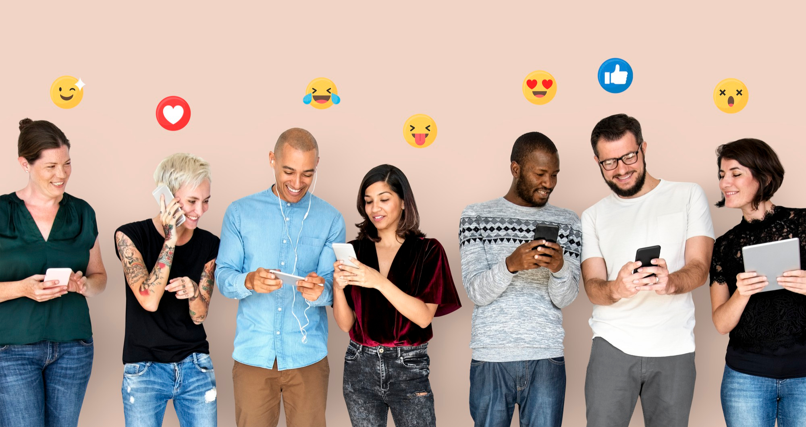

Redes Sociais
Rede social é uma estrutura social composta por pessoas ou organizações, conectadas por um ou vários tipos de relações, que compartilham valores e objetivos comuns. Uma das fundamentais características na definição das redes é a sua abertura, possibilitando relacionamentos horizontais e não hierárquicos entre os participantes. "Redes não são, portanto, apenas uma outra forma de estrutura, mas quase uma não estrutura, no sentido de que parte de sua força está na habilidade de se fazer e desfazer rapidamente".[1] Atualmente, o termo é comumente associado, porém não limitado, às Redes Sociais Virtuais. Muito embora um dos princípios da rede seja sua abertura e porosidade, por ser uma ligação social, a conexão fundamental entre as pessoas se dá através da identidade.
Muito embora um dos princípios da rede seja sua abertura e porosidade, por ser uma ligação social, a conexão fundamental entre as pessoas se dá através da identidade.
Os limites das redes não são limites de
separação, mas limites de identidade. (...)
Não é um limite físico, mas um limite de
expectativas, de confiança e lealdade, o
qual é permanentemente mantido e renegociado
pela rede decomunicações.
Em que posição você acha que ele ficou nos 10 mais? E quem será o líder do ranking? Os números que apresentamos abaixo são retirados do relatório de fevereiro de 2023 produzido em parceria por We Are Social e Meltwater. Muitas redes sociais, porém, divulgam números oficiais diferentes, enquanto outras fazem segredo. Assim, combinamos as informações mais confiáveis para chegar ao ranking definitivo.
Confira então, neste post, as 5 redes sociais mais usadas no Brasil em 2023! E se você chegou aqui querendo aprender mais sobre o uso profissional das redes, inscreva-se gratuitamente na RD University. Basta deixar seu email abaixo para ter acesso a cursos gratuitos de diversas disciplinas do Marketing Digital, incluindo mídias sociais.

Vamos ver um pouco mais sobre essas redes.
São elas: